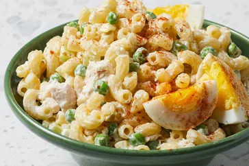

Macaroni Salad
This tuna macaroni salad is easy to make with cooked pasta, celery, peas, relish, and mayonnaise.
It will remind you of Grandma's!
Enjoy this basic comfort food when the weather is warm.
Ingredients
- 1 (12 ounce) package elbow macaroni
- 1 (10 ounce) can baby peas, drained
- 2 stalks celery, chopped
- 1 (5 ounce) can tuna, drained
- 2 tablespoons chopped sweet onion
- 1 cup mayonnaise
- 2 tablespoons sweet pickle relish
- salt and pepper to taste
- 3 large hard-cooked eggs, quartered
- 1 pinch paprika, for garnish